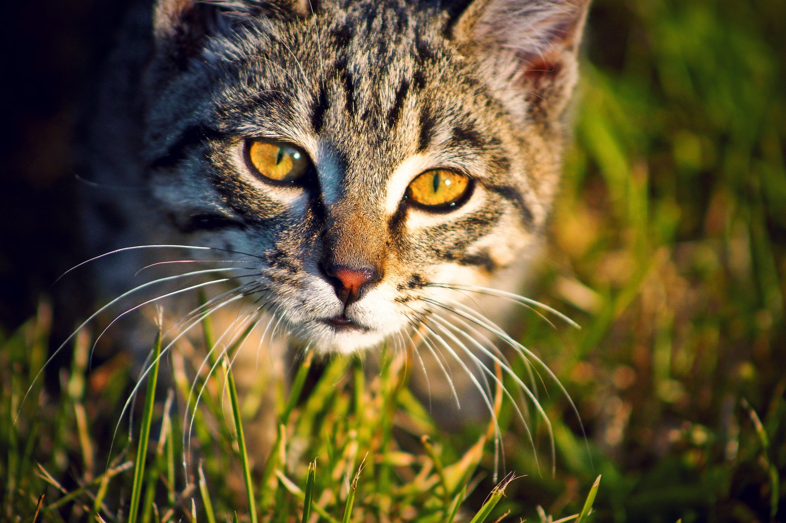

Коты любят уют и комфорт. Они обожают лежать на мягких подушках и коврах, и всегда стремятся найти самое удобное место для отдыха. Но не думайте, что они ленивы - они также любят играть и бегать по дому.
Их умение общаться с людьми и другими животными делает их идеальными компаньонами для жизни.